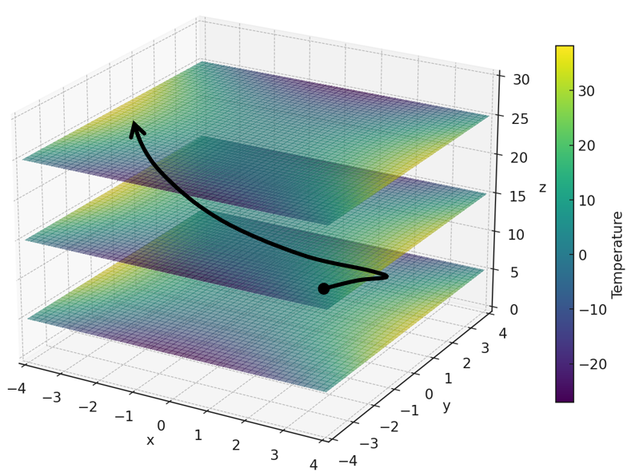

The Chain Rule
Consider a function of two variables, \(f(x, y)\). Suppose that \(x\) and \(y\) are functions of one variable, time \(t\). Then by the chain rule we can differentiate \(f\) with respect to time, as below.
Chain Rule, One Independent Variable
An Example
Consider the following three functions.
In this problem we find \(df/dt\) in two different ways, and see that both give the same answer.
- Express \(f(x, y)\) as a function of time, and then differentiate to find \(df/dt\).
- Use the chain rule to confirm the result from part (1).
Part (1)
Part (2)
Both methods give the same answer.
A Homework Problem
Consider a function \(E(x, y)\), where \(x\) and \(y\) are both functions of time, \(t\). Use the chain rule to find a formula for \(dE/dt\).
Replace \(f\) with \(E\) in the chain rule.
A Physics Application
The function below gives the temperature \(T\) at each point \((x, y, z)\) in space.
The vector-valued function below traces out the path of a particle over time, \(t\).

For this particle, find an expression for its rate of change in temperature with respect to time.
We are given the following functions.
The chain rule extends to any number of variables. With three variables:
Substituting \(x = 3\sin t\) and \(y = 3\cos t\) gives the rate in terms of time alone.
Consider a function of two variables, \(f(x, y)\). Suppose that \(x\) and \(y\) are both functions of two variables, \(s\) and \(t\). Then by the chain rule we can differentiate \(f\) with respect to \(s\) or \(t\), as below.
Chain Rule, Two Independent Variables
An Example
Consider the following three functions.
In this problem we find \(\partial f / \partial s\) in two different ways, and see that both give the same answer.
- Express \(f(x, y)\) as a function of \(s\) and \(t\), and then differentiate to find \(\partial f / \partial s\).
- Use the chain rule to confirm the result from part (1).
Part (1)
Part (2)
Both methods give the same answer.
A Physics Application
Electromagnetic energy density \(u\) is a function of the electric and magnetic field amplitudes, \(E\) and \(B\). It is given by the formula below, where \(\epsilon_0\) and \(\mu_0\) are physical constants known as the vacuum permittivity and vacuum permeability.
For an electromagnetic wave traveling in the positive \(x\) direction, \(E\) and \(B\) are functions of \(x\) and time \(t\), given below. Here \(E_0\) and \(B_0\) are the maximum values of the electric and magnetic fields, \(k\) is the wave number, and \(\omega\) is the angular frequency.
- Find \(\partial u / \partial E\) and \(\partial u / \partial B\). These represent how the energy density changes with respect to changes in the field amplitudes.
- Find \(\partial E / \partial t\) and \(\partial B / \partial t\). These represent how the fields vary in time at a fixed location \(x\).
- Use the chain rule to find \(\partial u / \partial t\), how the energy density changes in time at a fixed location \(x\).
Part (a)
Part (b)
Part (c)